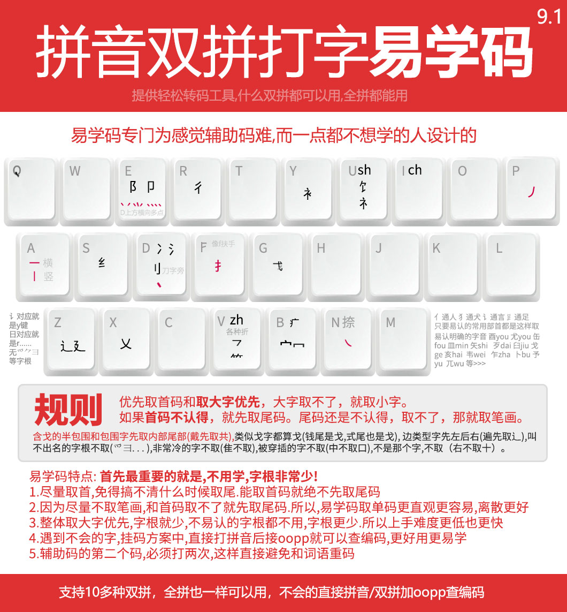

易学码介绍
易学码，提供拼音和双拼的辅助码
辅助码，就是打字不用选字的东西，可以用在搜狗输入法上。
比如打，皓，打haob就可以出皓，b就是辅助码白的音b
易学码，设计思路是，用最大的可能，不要学习
所以易学，人如其名。就是不用学直接可以用。
不会的字，直接拼音+oopp查编码。
易学码码表

易学码规则
1.尽量取首,免得搞不清什么时候取尾.能取首码就绝不先取尾码
2.因为尽量不取笔画,和首码取不了就先取尾码.所以易学码取单码更直观更容易,离散更好
3.整体取大字优先,字根就少,不易认的字根都不用,字根更少.所以上手难度更低也更快
4.遇到不会的字挂码方案中,直接打拼音后接oopp就可以查编码,更好用
5.辅助码的第二个码必须打两次,这样直接避免和词语重码前期你不想学,可以直接用易学码,
后期,轻松升级成汉心码,因为汉心就是易学的升级版,汉心取小字的规则多,重码低
常用的部首对应的位置解说
通人通犬i通言佳通足
只要易认的常用部首都是这样取
含戈的半包围和包围字先取内部民部类戈字都算戈(钱尾是戈,咸首码是口)
边类型字先左后右(过先取之)叫不出名的字根不取，非常冷的字不取，被穿插的字不取，不是那个字，不取。
例如 言对应就是y键
日对应就是r
易学辅助码下载
http://yaoxiazai.ysepan.com/
复制到浏览器打开，然后找里面的易学码下载文件夹
辅助码怎么使用和安装
一般都是打开输入法设置里的自定义短语
然后把你下载到的码复制到短语里即可。
这个是手心输入法安装自然码辅助码的方法
手机辅助码安装看这里
复制到浏览器打开
https://www.ixigua.com/7231103593359605812
上一篇
回到顶部
下一篇
汉心码出品@2023